Евгений Лепёшкин, @spearance
Мы будем говорить о тексте, его красоте, читаемости, знаках пунктуации и совсем чуть-чуть о вёрстке в HTML.
Сделаем основной акцент на экранной типографике для сайтов и приложений.
＊ сам владею только на уверенную троечку 😜
В понимании современных верстальщиков вёрстка это про HTML теги и CSS стили, но каких-то три десятка лет назад это слово было прочно связано с текстом и типографской печатью.
Само слово произошло от слова верста, как единица длины.
Верстать — располагать глифы и шпации на верстатке.
Расположение информации с помощью HTML/CSS в пространстве экрана, где одной из главных сущностей по-прежнему остаётся текст.
＊ расскажи уже про гриды
Мы стали слишком много стараться для девайсов и ботов, но совсем забываем о людях которым интересно читать, которые хотят получать наслаждение от процесса.
Давайте остановимся на мгновение и поговорим о красоте текста.
И вот уже есть «семантичная» и «адаптивные» вёрстки, стандарты написания кода, БЭМ и прочие договорённости. Мы улучшаем код в плане доступности для людей с ограниченными возможностями, применяем микроразметку, чтобы большее количество ботов смогло правильно разобрать нашу страницу.
Прежде чем говорить о вёрстке текста , нужно научиться расставлять обычные знаки препинания .
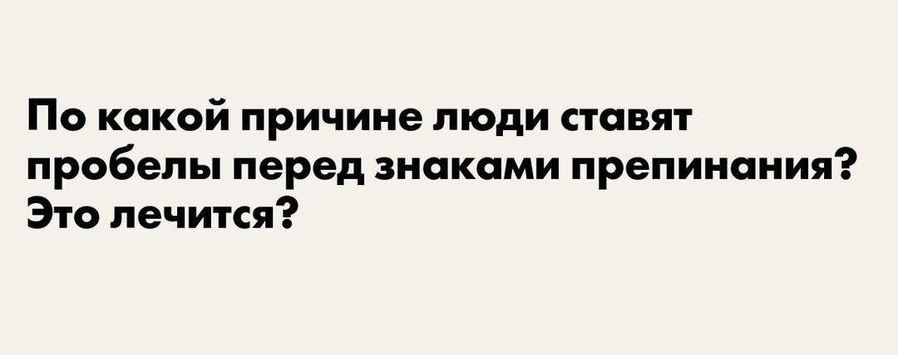
Точка, запятая, двоеточие, точка с запятой, вопросительный и восклицательный знаки, многоточие, кавычки и дефис никогда не отбиваются пробелом.
Тире — отбивается всегда!
Так текст можно набрать на клавиатуре:
"Вы все еще кое-как верстаете в "Word-е"? - Тогда мы идем к вам!"
А так должен выглядеть хорошо свёрстанный текст:
«Вы все еще кое-как верстаете в „Word-е“? — Тогда мы идем к вам!»
Освоить базовые правила текстовой вёрстки!
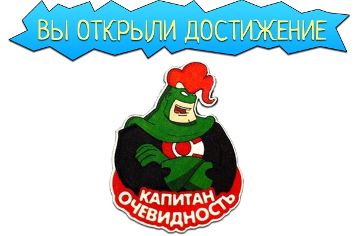
| Символ | Название | Мнемоник/код |
|---|---|---|
| — | Длинное тире | — |
| – | узкое/среднее тире | – |
| − | минус | − |
| - | дефис | нет |
| ‑ | неразрывной дефис | ‑ |
| | мягкий перенос | ­ |
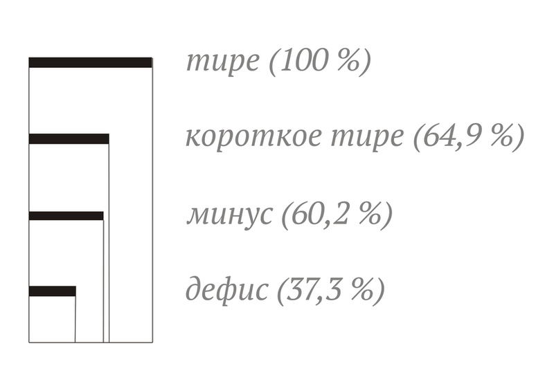
Как вдруг – о чудо! О позор! – заговорил оракул вздор.
＊ бесит шрифт
Как вдруг – о чудо! О позор! – заговорил оракул вздор.
Это событие произошло между
Проведем мероприятие в сентябре–октябре 2022 года.
Средняя температура февраля −11°C.
Вычтем из обеих частей данного равенства число 3: a−3 > b−3
Еле-еле мы успели на поезд.
Мы все учились понемногу чему-нибудь и как-нибудь.
В русском языке приняты две пары кавычек...
В русском языке приняты две пары кавычек...
В русском языке приняты две пары кавычек...
ООО "Фирма "Эдельвейс"
ООО "Фирма "Эдельвейс"
ООО «Фирма «Эдельвейс»
| Название | Мнемоник/код | Название |
|---|---|---|
| обычный пробел |   | ½ кегля |
| неразрывной пробел | | ½ кегля |
| самый маленький |   | ⅙ кегля |
| тонкий |   | ⅕ кегля |
| полукегельный N |   | ½ кегля |
| круглый M |   | равен высоте |
Два варианта связать текст:
<nobr> или <span class="nobr">span.nobr { white-space: nowrap; }
…Когда
…Когда
<p>…Когда <nobr>В. И. Пупкин</nobr> увидел в газете (это была «Сермяжная правда» № 45) рубрику Weather Forecast<sup><small>®</small></sup>, он не поверил своим глазам — температуру обещали ±<nobr>451 °F</nobr>.</p>
Да и то не то, да и не это.
Да и то не то, да и не это.
© ® ™ копирайты₽ € ¥ £ валюты° ‰ размерные единицы÷ ≈ ≠ ≤ ≥ математические§ … параграф и многоточие＊ отбивается на полукегельную при выключке отбивка не меняется
Неправильно
(С) 1999-2003г., ООО "Фирма "Эдельвейс". Все права защищены.
Правильно
©
＊ ГОСТ Р 7.0.1—2003
На лесопилку завезли 32 м3 леса, из которых 4м3 пустили под распил на 25мм доски, длинной по 6м.
На лесопилку завезли 32 м³ леса, из которых 4 м³ пустили под распил на 25 мм доски, длинной по 6 м.
Это произошло в 1999-2001г.г., на стыке XX-XXIв.
Это произошло в
Если вы верстальщик и не владеете всеми правилами типографики, не дай Бог, корректор или копирайтер — одумайтесь, заводам нужны свободные руки.
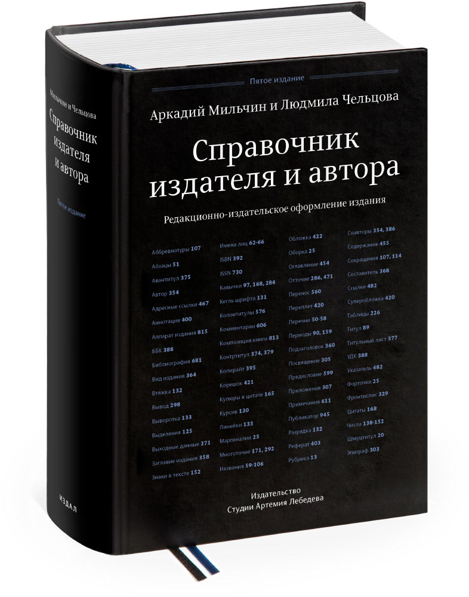 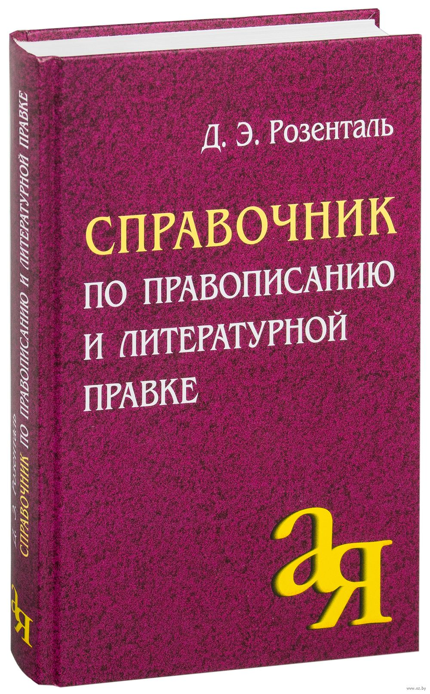 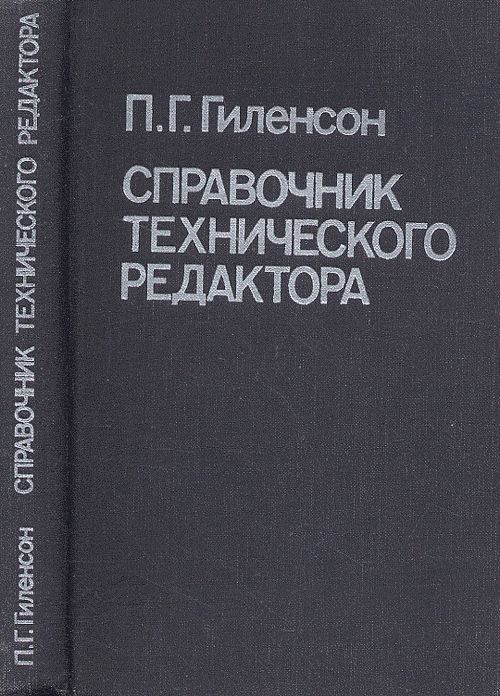
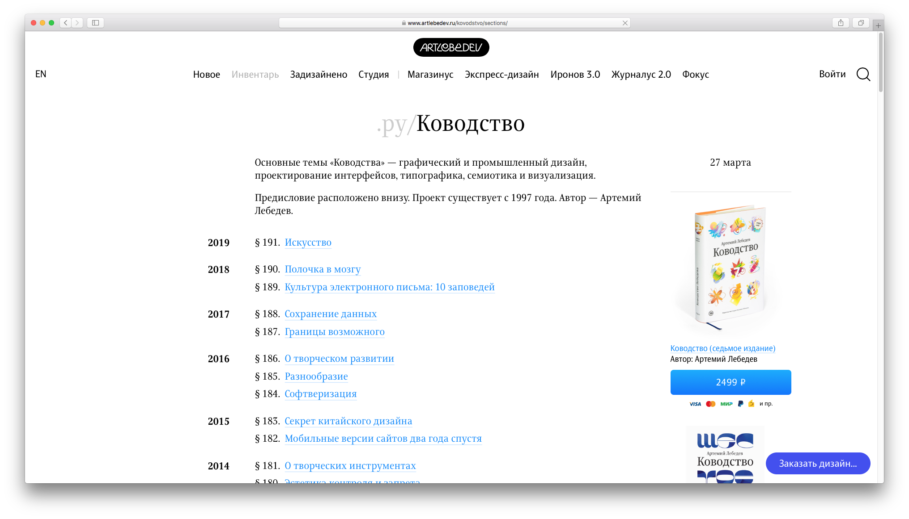
soviet.glvrd.ru 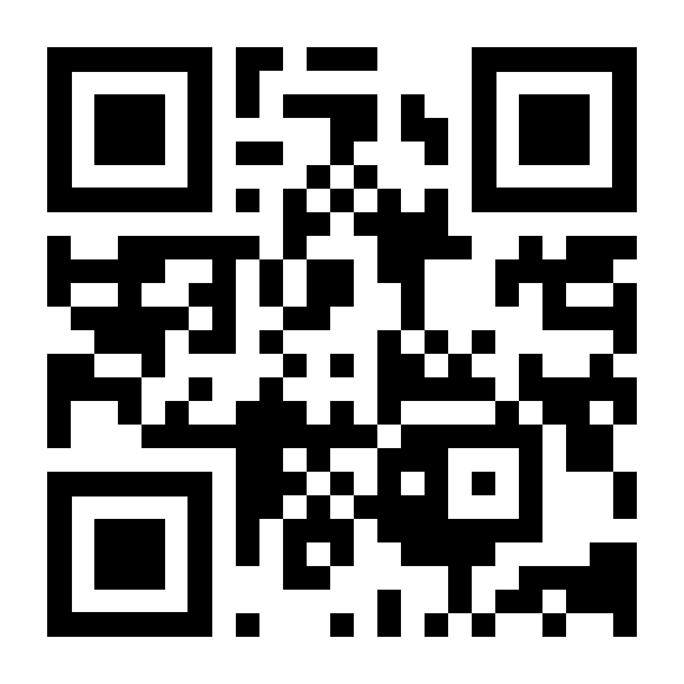
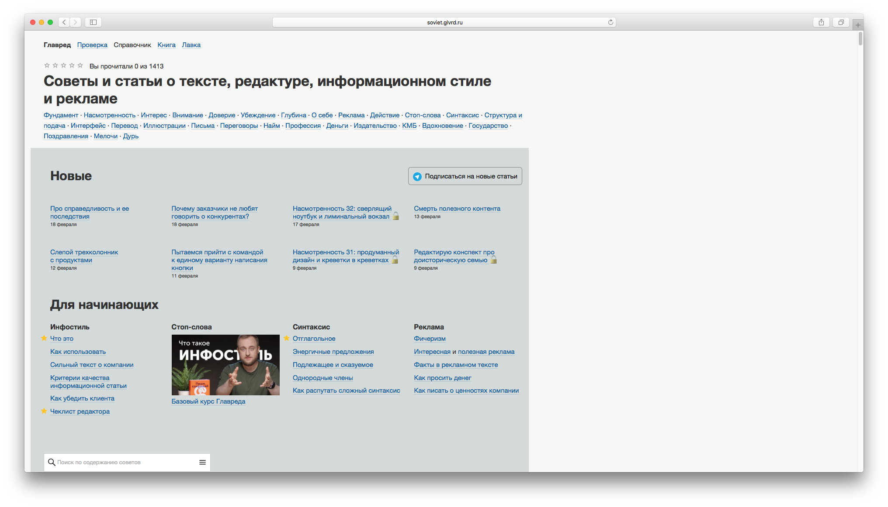
bureau.ru/soviet 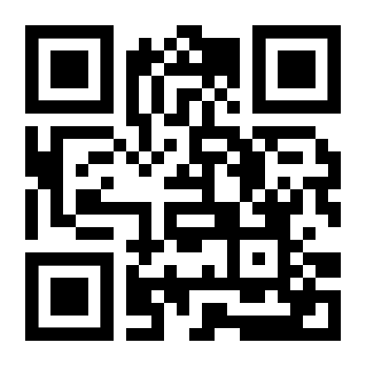
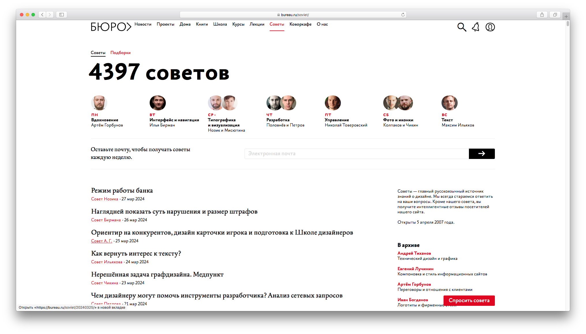
Накидайте интересующие вас вопросы по вёрстке текстов
и типографике для следующей нашей лекции.